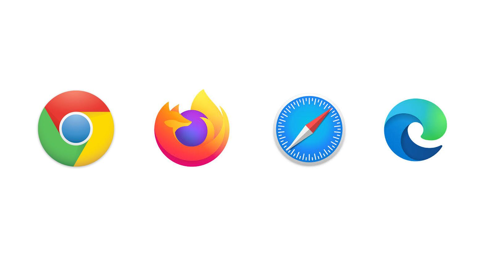

Web Browsers

A web browser is a software application used to access, retrieve, and display information on the World Wide Web. It allows users to view web pages written in HTML and interact with websites through hyperlinks, multimedia, and web applications.
Popular web browsers include Google Chrome, Mozilla Firefox, Microsoft Edge, Safari, and Opera. These browsers interpret web code (HTML, CSS, and JavaScript) and display it in a readable format.
Web browsers act as the interface between the user and the internet, enabling communication with web servers to request and display content.